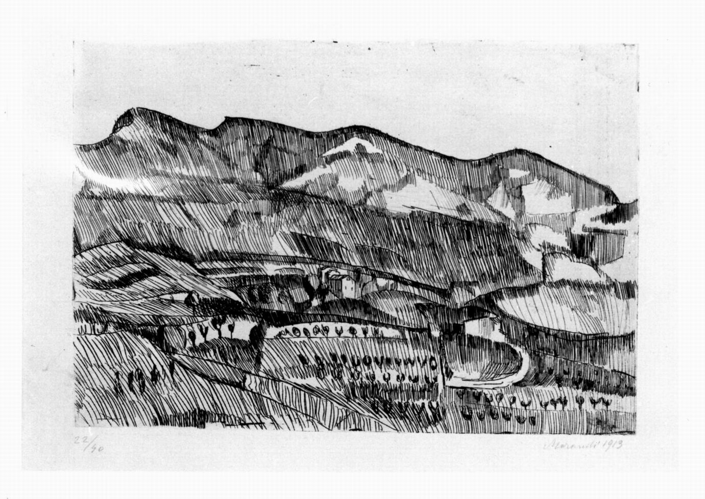

Stage 2

paesaggio. Grizzana, paesaggio con colline
Initial Query to the Knowledge Graph
We began with retrieving new information about "paesaggio. Grizzana, paesaggio con colline" and decided to use the following SPARQL query:
PREFIX cis: <https://w3id.org/arco/resource/HistoricOrArtisticProperty/>
DESCRIBE cis:0800057188
|
Purpose This SPARQL DESCRIBE query aims to retrieve a detailed description of a specific resource within a dataset. In this case, the resource is a historic or artistic property identified by the URI cis:0800057188. The query seeks to discover all the information available about the historic or artistic property with the given identifier. |
Using a Large Language Model to Enrich Metadata
After gathering all the information, the next steps involve enriching the data and utilizing Large Language Models (LLMs) for further analysis. For this comparison, I will employ two models: ChatGPT and Mixtral.
The first request was the following:
Cultural Property: Grizzana, paesaggio con colline (stampa)
Author: Morandi Giorgio
Q: What does this cultural property represent?
Zero-shot prompting
| ChatGPT | Mixtral |
| The cultural property "Grizzana, paesaggio con colline" (Grizzana, landscape with hills) is a print by Giorgio Morandi, an influential Italian painter and printmaker known for his contemplative and serene landscapes and still lifes. This particular work represents a landscape scene featuring the rolling hills of Grizzana, a village in the Bologna province of Italy. Morandi often depicted this rural area, which he found inspiring for its tranquil and unassuming beauty. Morandi's landscapes are characterized by their subtlety and simplicity. He focused on capturing the essence and atmosphere of a place rather than its detailed realism. The depiction of the Grizzana hills in this print reflects Morandi's unique style, emphasizing form, composition, and tonal harmony. The landscape is likely rendered with a quiet, introspective quality, encouraging viewers to appreciate the subtle interplay of light, shadow, and the contours of the land. In summary, "Grizzana, paesaggio con colline" represents Morandi's deep connection to the Italian countryside, his minimalist approach to landscape art, and his ability to evoke a sense of stillness and contemplation through his work. | This cultural property is a print titled "Grizzana, paesaggio con colline" (Grizzana, landscape with hills) by the Italian artist Giorgio Morandi. It depicts a rural landscape with rolling hills and a few scattered buildings, likely in the area of Grizzana, a place where Morandi often stayed and worked. Morandi is best known for his still life paintings, but he also created a significant number of landscapes in various media, including etching and watercolor. |
Second question: Can you extract exact cultural entities from this description? Give me a result as a list. Few-shot prompting (examples)
|
1) "Grizzana, paesaggio con colline" by Giorgio Morandi 2) Grizzana Morandi 3) Emilia-Romagna |
* Grizzana, paesaggio con colline (stampa) * Giorgio Morandi * Grizzana * Italy * Landscape with hills * Etching * Still lifes * Landscapes genre |
Third question: Could you transform this description into RDF format and use Arco ontology?
|
Chain-of-Thought Prompting "Grizzana, paesaggio con colline" by Giorgio Morandi @prefix arco: <https://w3id.org/arco/ontology/arco/> . @prefix foaf: <http://xmlns.com/foaf/0.1/> . @prefix xsd: <http://www.w3.org/2001/XMLSchema#> . <https://example.org/cultural_property/Grizzana_paesaggio_con_colline> a arco:CulturalProperty ; arco:title "Grizzana, paesaggio con colline"^^xsd:string ; arco:hasCreator <https://example.org/creator/Giorgio_Morandi> . <https://example.org/creator/Giorgio_Morandi> a foaf:Person ; foaf:name "Giorgio Morandi"^^xsd:string . Grizzana Morandi @prefix arco: <https://w3id.org/arco/ontology/arco/> . @prefix rdfs: <http://www.w3.org/2000/01/rdf-schema#> . @prefix xsd: <http://www.w3.org/2001/XMLSchema#> . <https://example.org/location/Grizzana_Morandi> a arco:Place ; rdfs:label "Grizzana Morandi"^^xsd:string . Emilia-Romagna @prefix arco: <https://w3id.org/arco/ontology/arco/> . @prefix rdfs: <http://www.w3.org/2000/01/rdf-schema#> . @prefix xsd: <http://www.w3.org/2001/XMLSchema#> . <https://example.org/location/Emilia_Romagna> a arco:Place ; rdfs:label "Emilia-Romagna"^^xsd:string . |
Adjusted the temperature and tokens settings + Prompt Chaining technique just prefixes @prefix arco: <http://www.ontologydesignpatterns.org/ont/arco/arco.owl#> @prefix rdf: <http://www.w3.org/1999/02/22-rdf-syntax-ns#> @prefix rdfs: <http://www.w3.org/2000/01/rdf-schema#> @prefix xsd: <http://www.w3.org/2001/XMLSchema#> an example of a querie request PREFIX arco: <http://www.ontologydesignpatterns.org/ont/arco/arco.owl#> PREFIX rdfs: <http://www.w3.org/2000/01/rdf-schema#> SELECT ?creator ?place WHERE { ?asset a arco:CulturalHeritageAsset ; rdfs:label "Grizzana, paesaggio con colline (stampa)"@en ; arco:hasCreator ?creator ; arco:represents ?place . ?creator rdfs:label ?creatorName . ?place rdfs:label ?placeName . FILTER(lang(?creatorName) = "en" && lang(?placeName) = "en") } |